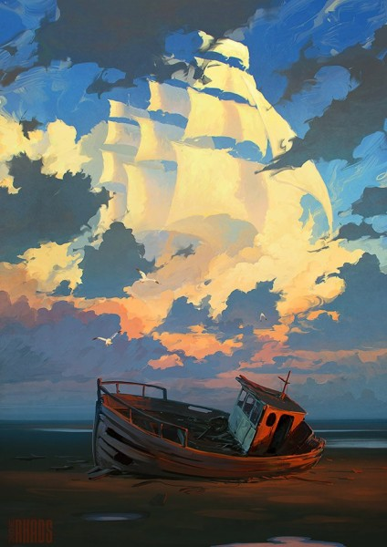

Развитие
Программы
Главная
Техника
Обратная связь
Основное различие между цифровой живописью и традиционной живописью – нелинейный творческий процесс. Художник может рисовать на
нескольких слоях (например, традиционные мультяшные техники), которые можно редактировать независимо. Кроме того, способность отменить и повторить картину освобождает художника от ограничений линейного процесса и, как в традиционных методах западной живописи, позволяет раскаяться.
Цифровая живопись ограничена тем, как она использует традиционные методы рисования из-за отсутствия физической поддержки; из-за ограниченной гаммы экранов он не позволяет создавать определенные цвета, доступные в природе, и не позволяет использовать отражающие, дифракционные или флуоресцентные материалы. С другой стороны, теперь проще, с низкой стоимостью памяти и инструментами управления большими изображениями на диске, работать с большими форматами и возможностью более легко и быстро исправлять с большой точностью и одновременно большая площадь. Возможности просмотра или печати, к сожалению, по-прежнему очень ограничены как их качеством, так и их определениями (большие форматы имеют очень низкое разрешение).
